10X Visium上游定量过程
原文：https://mp.weixin.qq.com/s?__biz=MzAwMzIzOTk5OQ==&mid=2247522444&idx=1&sn=91ddf9e2ca3fb75db3ad524fe0042fab&chksm=9b3ce1dcac4b68cae69b4da8444dbccbf8c5cddd04697797420d1cc43a2048575a5f23d9d395#rd 合集：空间转录组
1 软件简介
Space Ranger是10x 公司为空间转录分析量身打造的一款数据分析软件，一般会用它来完成上游的分析步骤，主要用来处理Visium空间基因表达数据与明场和荧光显微镜图像，将测序数据和图片作为输入的数据，输出表达定量矩阵，为下游的seurat包提供整合之后的数据。也结合配套的loupe软件，做一些降维，聚类结果的可视化。
官网：https://www.10xgenomics.com/support/software/space-ranger/latest
如果你对下面的教程比较迷茫，那么你可以先行学习Linux教程：十小时学会Linux 生信Linux及服务器使用技巧 如果你的计算机不足以支持下面流程的学习，可按需选用适合自己的计算资源：共享(经济实惠)：有root权限的共享服务器,报我名字立减200￥独享(省电省心)：生信分析不求人
实体(稳定高效)：为实验室准备一份生物信息学不动产
访问链接(复制到浏览器打开)：
https://biomamba.xiyoucloud.net/
更多内容可咨询客服微信[Biomamba_yunying]
2 在linux系统中下载和安装Space Ranger
下载网址https://www.10xgenomics.com/support/software/space-ranger/downloads
2.1 软件下载
选择wegt方法下载：
#新建一个属于它的文件夹
mkdir spaceranger
wget -O spaceranger-3.0.0.tar.gz "https://cf.10xgenomics.com/releases/spatial-exp/spaceranger-3.0.0.tar.gz?Expires=1713228032&Key-Pair-Id=APKAI7S6A5RYOXBWRPDA&Signature=CdQ1bLjxIGu4jJbCJDzLpHozbM486wFSwzzl5TM3-sNR2AkssP~WqHmzBV7xwZmw93HqOg95QoT8p-xwXczVBEeEiMZ~nsPJRj7Gd9SVGlbj9DUi3EA7AFcgqgj-5vn0LpnvV1JXAJhpXF8AD-oEsvnWRkc0~rYVqmL2LIeoqa2mNiUkr9-G2Wkjkzwj46Ee1Y~rWb1-nYM3Jr9LtsmDs79SPLed3UOoXUeZJwsoTppdBplbGRiH~OzpiKTjIsl51lI-FS1xB0qoAo40XOGtCXxKVLMdL8Kv7QyKQZRj5bC5LpDjVnRyO7Da-5hEFKShC4vXTgdQ2I3MAjLNC68lAA__"
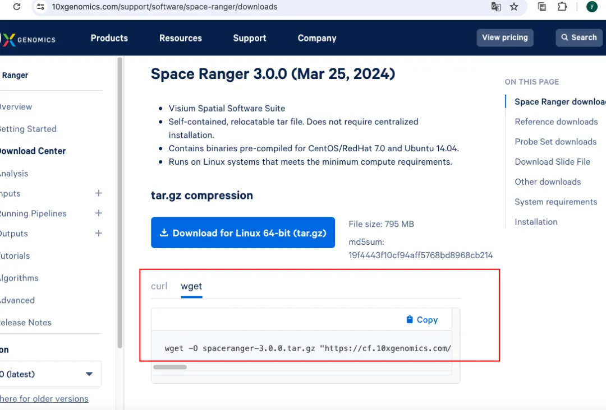
需要几分钟进行下载
2.2 安装
解压
cd spaceranger
tar -xzvf spaceranger-3.0.0.tar.gz
添加环境量
将 Space Ranger 目录添加到您的$PATH。这允许您调用 spaceranger 命令。这里我的路径为/home/wangyan/spaceranger
export PATH=/home/wangyan/spaceranger/spaceranger-3.0.0:$PATH
检查系统是否满足运行该软件的最小配置，结果保存在sitecheck.txt中
spaceranger sitecheck > sitecheck.txt
检查是否安装成功
export PATH=/opt/spaceranger-3.0.0:$PATH
spaceranger testrun --id=tiny
-----------------------------------------------------------------------------
Running preflight checks (please wait)...
Checking sample info...
Checking FASTQ folder...
Checking reference...
...
Pipestance completed successfully!
如果运行成功则会出现虚线下面的内容。尤其是这句：Pipestance completed successfully!
2.3 参考基因下载解压
下载
分别下载人的（11G需要1多小时）参考基因组：
#这里以GRCh38基因组为例
wget "https://cf.10xgenomics.com/supp/spatial-exp/refdata-gex-GRCh38-2020-A.tar.gz"
和鼠参考基因（9.7G）：
#这里以mm10基因组为例，下载了38分钟
wget "https://cf.10xgenomics.com/supp/spatial-exp/refdata-gex-mm10-2020-A.tar.gz"
解压
#这里以GRCh38基因组为例
tar -xzvf refdata-gex-GRCh38-2020-A.tar.gz
3 使用space ranger分析数据
3.1 prepare input(准备输入数据)
在开始运行Space Ranger之前，您需要准备输入文件。这些文件将根据您的实验参数、选择的检测方法以及您使用的 Space Ranger 管道而有所不同。
3.1.1 总览
input for spaceranger count
1.需要参考基因：
需要提前下载解压准备好，如果是人和小鼠以外的物种则需要自行制作，可参考下面网址进行：
https://www.10xgenomics.com/support/software/space-ranger/latest/advanced/custom-references
2.准备Fastq文件(测序数据)：可以用spaceranger mkfast 将BCL文件转化为fastq文件，再进行下一步的space count。
3.需要显微镜图像（明场或荧光或CytAssist 图像）用作表达数据的解剖图。
4.需要slide ID和capture area，如果提供的是 CytAssist 图像，则可以从图像元数据中自动检索此信息，并且不需要进一步的输入。
5.手动对齐：对于荧光图像（Visium v1，直接放置）、基准标记物受阻或组织边界不清晰或自动比对失败的情况，手动对齐是必要的。使用 –loupe-alignment 选项将生成的 JSON 文件指定为 spaceranger count。
6.要分析蛋白质表达数据（Visium HD 不支持），必须设置功能参考Feature Reference CSV。
input for spaceranger aggr
spaceranger aggr pipeline 需要一个 CSV 文件，该文件指定 molecule_info.h5 文件（从 spaceranger count输出）的路径，该文件表示要聚合的库。spaceranger aggr 不支持 Visium HD。
其中的spaceranger mkfastq用的比较少，spaceranger count用的最多。
3.2 spaceranger mkfastq
有时拿到的数据是BCL(binary base call)文件，需要转换为fastq格式文件。
SpaceRanger MKFastq可识别两种用于描述样本的文件格式:1.简单的三列CSV格式;2.bcl2fastq使用的Illumina Experiment Manager（IEM）样品表格式。下面的示例展示了使用每种格式运行 mkfastq。
示例展示(用tiny-bcl例子进行举例)
(1)下载举例数据
#下载tiny-bcl tar文件并解压
wget "https://cf.10xgenomics.com/supp/spatial-exp/spaceranger-tiny-bcl-1.0.0.tar.gz"
tar -xzvf spaceranger-tiny-bcl-1.0.0.tar gz
#下载简单的csv布局文件
wget "https://cdn.10xgenomics.com/raw/upload/v1682709348/software-support/Spatial-GEX/SR-v2.1/SR-mkfastq/spaceranger-tiny-bcl-simple-1.0.0.csv"
#下载IEM样品表格式
wget "https://cdn.10xgenomics.com/raw/upload/v1682709348/software-support/Spatial-GEX/SR-v2.1/SR-mkfastq/spaceranger-tiny-bcl-samplesheet-1.0.0.csv"
(2)Running mkfastq with a simple CSV sample sheet
大部分时候比较推荐使用simple csv，内容只包含3列 (泳道Lane, 样品名称Sample, Index)：
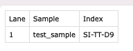
run:
Hide
spaceranger mkfastq --id=tiny-bcl #设置output文件名
--run=/PATH/TO/tiny-bcl #
--csv=spaceranger-tiny-bcl-simple-1.0.0.csv
(3)Running mkfastq with an IEM sample sheet
IEM样品表有几个特定于在Illumina平台上运行的字段，包括指定样品和索引信息的[数据]部分。spaceranger mkfastq 支持列出索引集名称或寡核苷酸序列。
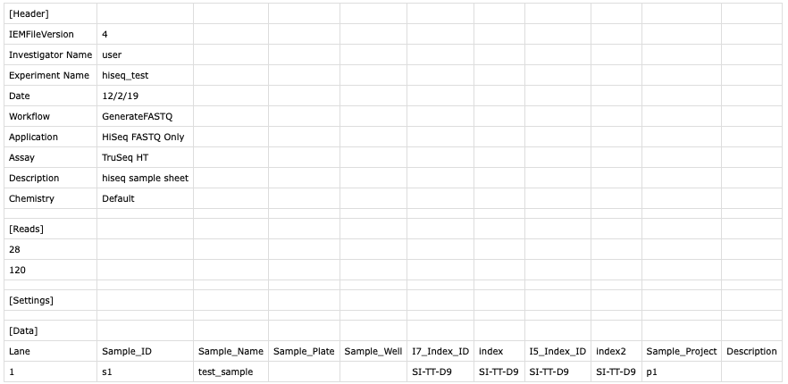
run:
spaceranger mkfastq --id=tiny-bcl \
--run=/PATH/TO/tiny-bcl \
--samplesheet==spaceranger-tiny-bcl-samplesheet-1.0.0.csv
(4)检查fastq ouput
只有成功完成 spaceranger mkfastq 后才会输出为一个新文件夹，该文件夹的名字就是前面设置的 –id 选项中提供的命名：
ls -l
# expected output
drwxr-xr-x 4 jdoe jdoe 4096 Nov 14 12:05 tiny-bcl
关键输出文件可以在 outs/fastq_path 中找到：
ls -l tiny-bcl/outs/fastq_path/ tiny-bcl/outs/fastq_path/
# expected output
drwxr-xr-x 3 jdoe jdoe 3 Nov 14 12:26 Reports
drwxr-xr-x 2 jdoe jdoe 8 Nov 14 12:26 Stats
drwxr-xr-x 3 jdoe jdoe 3 Nov 14 12:26 tiny-bcl
-rw-r--r-- 1 jdoe jdoe 20615106 Nov 14 12:26 Undetermined_S0_L001_I1_001.fastq.gz
-rw-r--r-- 1 jdoe jdoe 51499694 Nov 14 12:26 Undetermined_S0_L001_R1_001.fastq.gz
-rw-r--r-- 1 jdoe jdoe 152692701 Nov 14 12:26 Undetermined_S0_L001_R2_001.fastq.gz
tree tiny-bcl/outs/fastq_path/tiny_bcl/
# expected output
tiny-bcl/outs/fastq_path/tiny_bcl/
└── Sample1
├── Sample1_S1_L001_I1_001.fastq.gz
├── Sample1_S1_L001_R1_001.fastq.gz
└── Sample1_S1_L001_R2_001.fastq.gz
4 Run pipelin (运行spaceranger)
4.1 spaceranger count
4.1.1 Visium V2 –count for Visium CytAssist, Spatial Gene and Protein Expression
Space Ranger v2.1 及更高版本可以分析使用福尔马林固定石蜡包埋 （FFPE） 样品生成的 Visium 空间基因和蛋白质表达数据集。在这个支持 CytAssist 的工作流程中，从 Visium 载玻片上的同一捕获区域生成单独的基因表达(GEX)和蛋白质表达 (PEX)测序文库。
常规的空间转录组的分析流程如下：
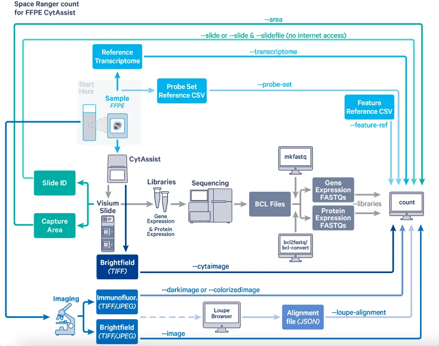
(1)input file输入文件准备
需要的文件包括：
1.libraries CSV(文库csv)，即GEX或PEX的fastq文件(可选 ，如果结果基于RNAseq得到则需要的，可以用spaceranger mkfastq将BCL文件转化为fastq格式的文件，见3.2；如果是基于探针得到则不需要):
spaceranger --libraries
2.CytAssist图像(tiff，可选 ，CytAssist捕获的图像时才用到):
spaceranger --cytaimage
3.Microscope image 组织的照片(明场或荧光照片，tiff、QPTIFF or JPEG，和CytAssist图像只选其一，取决于组织图像是那种类型，具体可以参考5 Space Ranger的分析流程中的3种图像的参数):
spaceranger --image #for 明场图像
--darkimage #for 暗色背景荧光显微镜图像
--colorizedimage #for 彩色荧光显微图像
4.slide 参数，包括ID和area：
spaceranger --slide,--area #联网的情况下
--slidefile,--slide,--area #没联网时
其中slidefile必须直接下载，网址；https://www.10xgenomics.com/support/software/space-ranger/downloads#reference-downloads中的Slide File Download
5.参考基因组：人和鼠的可以从网上下载，其他的则需要自己构建
6.probe set CSV(可选 ，结果是基于探针得到的则需要，否则不需要)
基于Visium探针的检测靶向人或小鼠转录组中的基因。对于这些检测，需要指定设置为 spaceranger 计数管道的相关探针。探针套装与Space Ranger套件捆绑在一起，下载网址：；https://www.10xgenomics.com/support/software/space-ranger/downloads#reference-downloads的Probe Sets
7.Feature Reference CSV(可选 ,处理 Visium CytAssist 蛋白 表达数据时，需要功能Feature Reference CSV 文件)：
Space Ranger v2.1 及更高版本与 Visium_Human_Immune_Cell_Profiling_Panel_v1.0.csv 捆绑在一起，其中包含 panel 中存在的每种抗体的蛋白质靶标信息和独特的寡核苷酸序列。CSV 的每一行都声明一种独特的抗体。特征参考 CSV 文件将使用 –feature-ref 标志传递给 spaceranger 计数。请注意，CSV 不得包含 ASCII 范围之外的字符。
(2)代码
spaceranger count --id=Visium_GEX_PEX #结果文件夹名
--fastqs=/.../.../fastq_path #存放fastq文件的路径
--probe-set=Visium_Human_Transcriptome_Probe_Set_v2.0_GRCh38-2020-A.csv #存放探针文件的路径(可选项非必须,可从官网下载)
--image=/.../.../CytAssist_FFPE_tissue_image.tif #组织图像文件路径
--cytaimage=/.../.../CytAssist_FFPE_Protein_Expression_Human_Tonsil_image.tif #CytAssist图像位置(可选：取决于样本测序时用的技术)
--transcriptome=/.../.../refdata-gex-GRCh38-2020-A
--slide=V43J30-093 CytAssist #slide ID
--slidefile=V19L01-041.gpr #如果未联网，slide布局文件(可选)
--area=D1 # slide area
--feature-ref=/.../.../CytAssist_FFPE_Protein_Expression_Human_Tonsil_feature_reference.csv #feature_reference.csv的存放位置(可选：计算蛋白表达量才需要)
--loupe-alignment=/…/…/sample.json #如果手动对齐，json文件路径(可选)
--create-bam true #必填，选择true还是false，一般选择true
注意：
1.除了最后一行外，其他行代码结尾必须加****，这个符号表示这串代码是整体运行，不加的话切换到下一行就是新的一串代码了。
2.运行的路径中必须是在spaceranger软件所在路径，并且已经添加了环境量，否则会提示spaceranger cannot find the command.
(3)示例展示
这里用一个25岁男性扁桃体样本进行举例，具体样本信息见https://www.10xgenomics.com/datasets/visium-cytassist-gene-and-protein-expression-library-of-human-tonsil-with-add-on-antibodies-h-e-6-5-mm-ffpe-2-standard 利用空间转录分析其蛋白表达情况。
(3.1)下载需要的输入数据
wget https://s3-us-west-2.amazonaws.com/10x.files/samples/spatial-exp/2.1.0/CytAssist_FFPE_Protein_Expression_Human_Tonsil_AddOns/CytAssist_FFPE_Protein_Expression_Human_Tonsil_AddOns_fastqs.tar
wget https://cf.10xgenomics.com/samples/spatial-exp/2.1.0/CytAssist_FFPE_Protein_Expression_Human_Tonsil_AddOns/CytAssist_FFPE_Protein_Expression_Human_Tonsil_AddOns_image.tif
wget https://cf.10xgenomics.com/samples/spatial-exp/2.1.0/CytAssist_FFPE_Protein_Expression_Human_Tonsil_AddOns/CytAssist_FFPE_Protein_Expression_Human_Tonsil_AddOns_alignment_file.json
wget https://cf.10xgenomics.com/samples/spatial-exp/2.1.0/CytAssist_FFPE_Protein_Expression_Human_Tonsil_AddOns/CytAssist_FFPE_Protein_Expression_Human_Tonsil_AddOns_probe_set.csv
wget https://cf.10xgenomics.com/samples/spatial-exp/2.1.0/CytAssist_FFPE_Protein_Expression_Human_Tonsil_AddOns/CytAssist_FFPE_Protein_Expression_Human_Tonsil_AddOns_feature_reference.csv
wget https://cf.10xgenomics.com/samples/spatial-exp/2.1.0/CytAssist_FFPE_Protein_Expression_Human_Tonsil_AddOns/CytAssist_FFPE_Protein_Expression_Human_Tonsil_AddOns_tissue_image.btf
解压其中的fastq.tar文件：
tar -xvf CytAssist_FFPE_Protein_Expression_Human_Tonsil_AddOns_fastqs.tar
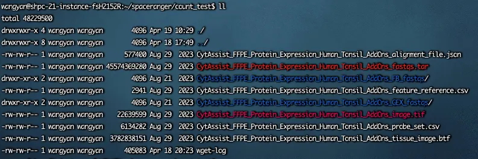
(3.2)run(这里进行图像的自动对齐)
spaceranger count --id=sample_count_test \
--fastqs=/home/wangyan/spaceranger/count_test/CytAssist_FFPE_Protein_Expression_Human_Tonsil_AddOns_GEX_fastqs \
--probe-set=/home/wangyan/spaceranger/count_test/CytAssist_FFPE_Protein_Expression_Human_Tonsil_AddOns_probe_set.csv \
--image=/home/wangyan/spaceranger/count_test/CytAssist_FFPE_Protein_Expression_Human_Tonsil_AddOns_image.tif \
--cytaimage=/home/wangyan/spaceranger/count_test/CytAssist_FFPE_Protein_Expression_Human_Tonsil_AddOns_image.tif \
--transcriptome=/home/wangyan/spaceranger/refdata-gex-GRCh38-2020-A \
--feature-ref=/home/wangyan/spaceranger/count_test/CytAssist_FFPE_Protein_Expression_Human_Tonsil_AddOns_feature_reference.csv \
--slide=V43M23-019 \
--area=D1 \
--create-bam true \
--no-libraries
也可以写成一个shell(.sh文件)，把上面代码写进去，方法如下：
touch count_test.sh #新建一个shell文件
#用vim编辑，按i进入编辑界面
vim count_test.sh
#写入以下内容到该shell脚本
#!./bin/bash
spaceranger count --id=sample_count_test \
--fastqs=/home/wangyan/spaceranger/count_test/CytAssist_FFPE_Protein_Expression_Human_Tonsil_AddOns_GEX_fastqs \
--probe-set=/home/wangyan/spaceranger/count_test/CytAssist_FFPE_Protein_Expression_Human_Tonsil_AddOns_probe_set.csv \
--image=/home/wangyan/spaceranger/count_test/CytAssist_FFPE_Protein_Expression_Human_Tonsil_AddOns_image.tif \
--cytaimage=/home/wangyan/spaceranger/count_test/CytAssist_FFPE_Protein_Expression_Human_Tonsil_AddOns_image.tif \
--transcriptome=/home/wangyan/spaceranger/refdata-gex-GRCh38-2020-A \
--feature-ref=/home/wangyan/spaceranger/count_test/CytAssist_FFPE_Protein_Expression_Human_Tonsil_AddOns_feature_reference.csv \
--slide=V43M23-019 \
--area=D1 \
--create-bam true \
--no-libraries
#按esc后输入:wq保存退出
#在 Linux 中，要执行一个文件，必须具有执行权限：
chmod +x count_test.sh
#运行该shell脚本
./count_test.sh
(3.3)result
运行成功后会得到以下内容：
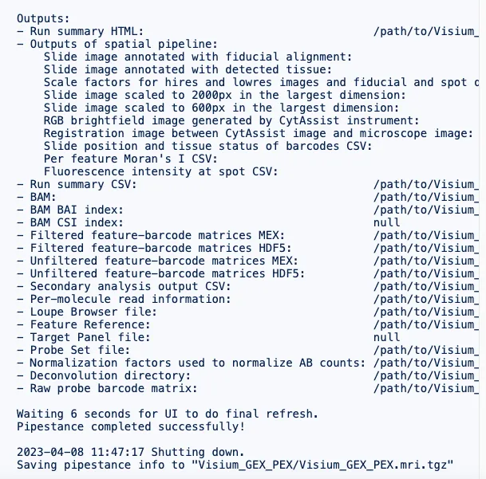
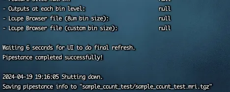
得到的结果文件内主要包含以下内容：
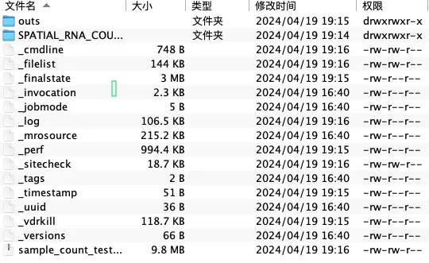
其中后续分析需要用到的数据在outs中，主要是filtered_feature_bc_matrix ，spatial (用于后续的seurat分析)；spaceranger本身也会进行下游分析 ，分析的结果保存在.cloupe，可以配合Loupe Browser进行使用；这次分析结果也会生成一个网页报告(web_summary.html)，里面包含本次分析信息例如分析数据信息(Summary)，质控信息(在网页报告中的Sequencing)以及下游分析信息(Gene Expression)。
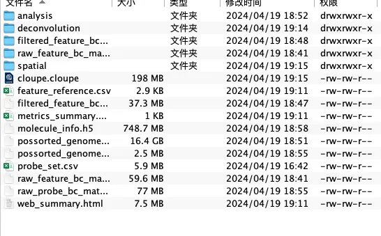
5 下游分析
5.1 Loupe Browser
spaceranger运行完成后的outs文件中的.cloupe文件就用于在Loupe Browser上进行下游分析。下面用上面得到的cloupe文件基于Loupe Browser7.0.1进行演示：
基本操作可以参考Loupe Browser的用法介绍那篇文章，之前的数据不是空间转录测序，这与前面不同的是，在菜单栏中有一项spot deconvolution，点击后生成的视图类似于 K 均值聚类的视图，但现在 K 表示不同的主题;deconvolution结果按 K 分层聚类，以反映细胞类型的不同粒度。具体的用法可以参考以下网址：https://www.10xgenomics.com/support/software/loupe-browser/latest/tutorials/space-ranger-spot-deconvolution
5.2 Seurat
这部分内容见Seurat文章。
Library(Seurat)
Sample <- Read10X(data.dir = ‘/…/…/outs/filtered_feature_bc_matrix/’) #加载表达矩阵
Sample <- CreateSeuratObject(Sample, project = ‘brain’, assay = ‘Spatial’, min.cells = 3) #创建Seurat对象
Image <- Read10X_Image(‘/…/…/outs/spatial’) #加载图像
DefaultAssay(Image) <- 'Spatial'
Sample[[‘image’]] <- Image #整合表达矩阵与图像
6 空间区域的挑选
(1)先在Loupe软件处理
Loupe中选择需要研究了cluster，并下载对应的Graph Based.csv文件：
a.方式一直接选择cluster，并下载该文件内容共2列，分别是barcode ID和cluster编号；
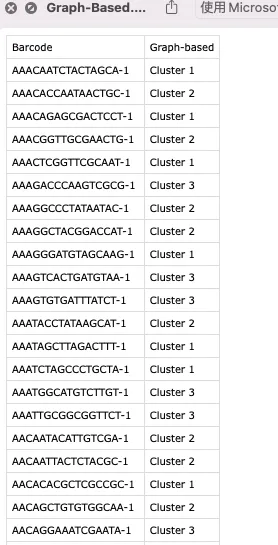
b.方式二先选中目标cluster，再用右上方的套索和画笔工具，选好后生成新的分析，点击export–projection to csv，得到csv文件共3列，分别是barcode ID和X、Y坐标点。
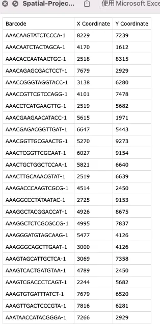
(2)Seurat处理
利用细胞ID(barcode ID)进行筛选子集,如果上一步得到的目标cluster细胞barcode ID保存在sub.csv文件中：
cell_ID <- read.csv("sub.csv",header = TRUE)#从CSV文件中读取细胞ID
cell_ID <- as.character(cell_ID$Barcode)
sub_data <- Seurat::subset(object = seurat_object, cells = cell_ID)
object指原始数据，就是过滤后的表达矩阵。
其他步骤与单细胞测序相同？？
7 手动对齐
工具：Loupe，按图片操作：
a.红框选中的地方
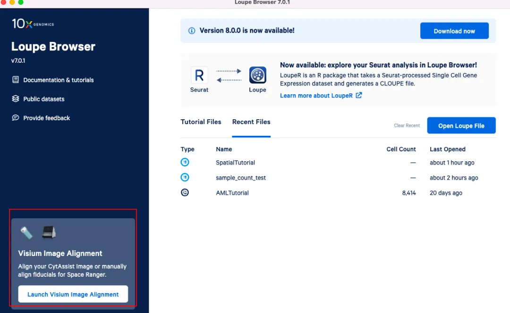
b.选择哪个取决于空间转录组是用什么技术做的，左边是普通，右边是用cytassist：
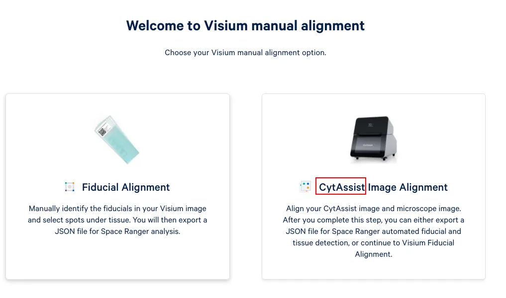
c.这里选则右边，共4步骤，第一步上传图像，左边上传cyassist图像，右边上传组织图像，并在下方选择图像格式为明场还是荧光：
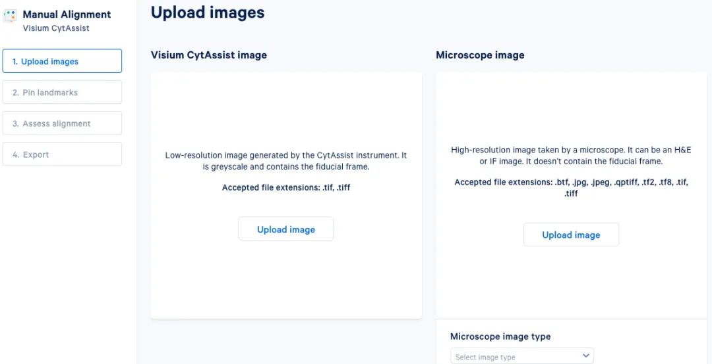
d.上传成功后进行Next，Pin landmarks，进行左右定位，选择两张图中组织相同的位置，尽量选择5-8个点：
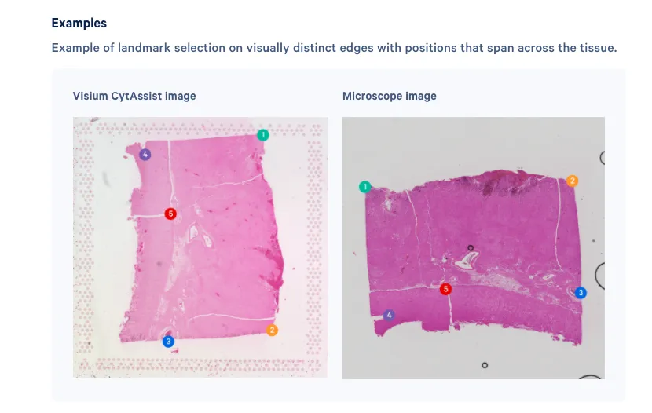
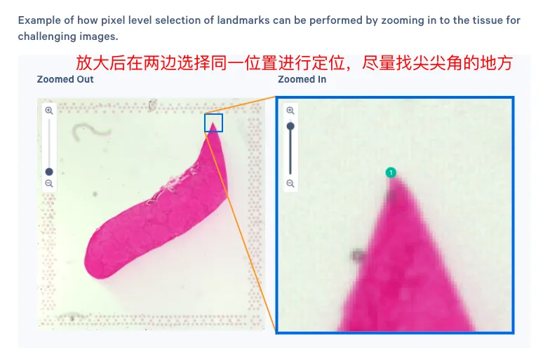
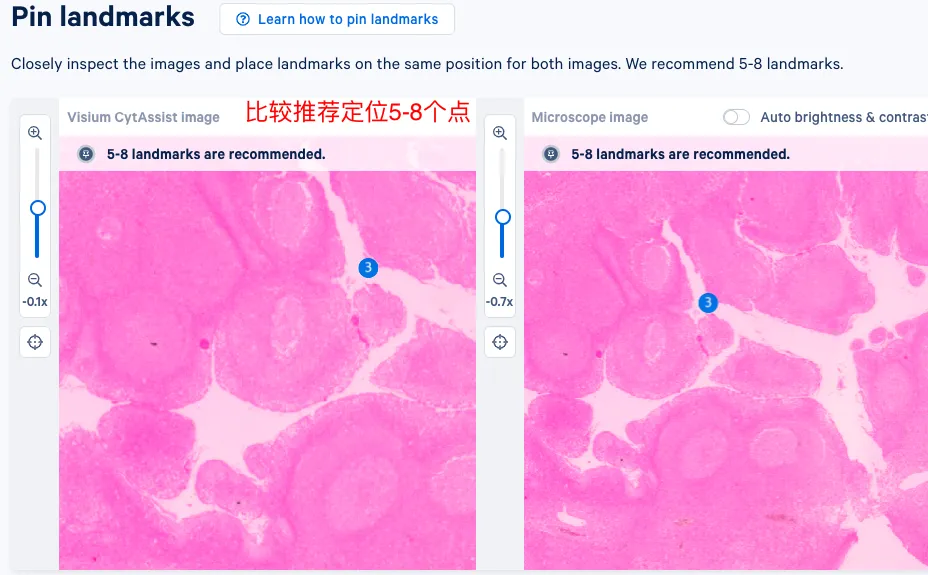
e.完成后进行下一步
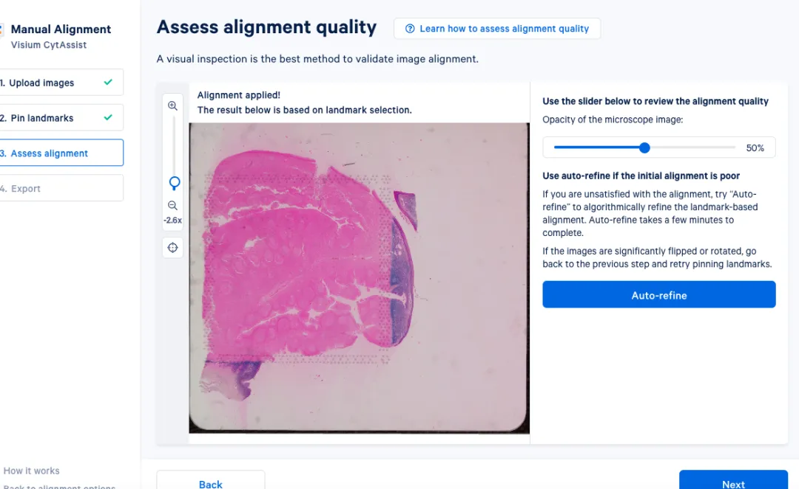
f.选择生成JSON文件或者继续手动对齐：
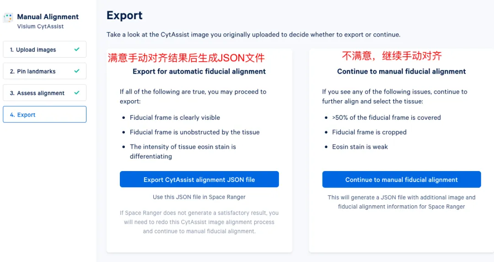
补充1. Space Ranger的分析流程中的三种图像的参数
| 图像格式| Space Ranger语法| 是否自动基准对齐 ---|---|---|--- 明场(eg:HE)| 24位彩色TIFF/BigTIFF或JPEG| --image| 是 明场(eg:HE)| 16位灰度TIFF/BigTIFF或JPEG| --image| 是 荧光| 8 位或 16 位灰度单幅，8 位或 16 位灰度单幅；16位灰度TIFF/BigTIFF或JPEG| --darkimage--dapi-index| 否，必须在loupe中手动对齐 荧光| 24 位单色图像 TIFF/BigTIFF 或 JPEG| --colorizedImage--dapi-index| 否，必须在loupe中手动对齐 CytAssist图像| 24位彩色图像| --cytaimage| 是

空间转录组内容合集
代码教程 ：
空间转录组学习手册合辑(包含Seurat、Scanpy、Squidpy、Stereopy)
文献阅读 ：

欢迎致谢
如果以上内容对你有帮助，欢迎在文章的Acknowledgement中加上这一段，联系客服微信可以发放奖励：
Since Biomamba and his wechat public account team produce bioinformatics tutorials and share code with annotation, we thank Biomamba for their guidance in bioinformatics and data analysis for the current study.
欢迎在发文/毕业时向我们分享你的喜悦~
已致谢文章：
**《Advanced Science》新型Arf1抑制剂促进癌症干细胞衰老并增强抗肿瘤免疫 **
13分+文章利用scRNA-Seq揭示地铁细颗粒物引起肺部炎症的分子机制 IF14.3| scRNA-seq+脂质组多组学分析揭示宫内生长受限导致肝损伤的性别差异 鼻咽癌的Bulk RNA-Seq与scRNA-Seq联合分析 除了铁死亡，还有铜死亡？！ 银屑病和脂肪肝病中共同病理和免疫特征
** **

如何联系我们

 公众号后台消息更新不及时，超过48h便不许回复读者消息，这里给大家留一下领取资料及免费服务器(生信分析为什么要使用服务器？)的微信号 ，方便各位随时交流、提建议（科研任务繁重，回复不及时请见谅）。此外呼声一直很高的交流群 也建好了，欢迎大家入群讨论：
公众号后台消息更新不及时，超过48h便不许回复读者消息，这里给大家留一下领取资料及免费服务器(生信分析为什么要使用服务器？)的微信号 ，方便各位随时交流、提建议（科研任务繁重，回复不及时请见谅）。此外呼声一直很高的交流群 也建好了，欢迎大家入群讨论：
大家可以阅读完这几篇之后添加给生信入门初学者的小贴士 如何搜索公众号过往发布内容

 您点的每个赞和在看，我都认真当成了喜欢
您点的每个赞和在看，我都认真当成了喜欢